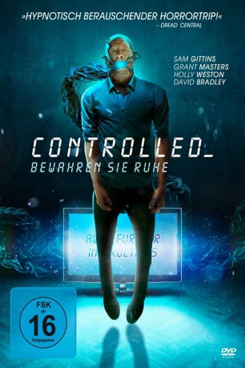

gesehen am 17.05.2019
gesehen am 17.05.2019Alternativ: Await Further Instructions (Englischer Titel) gesehen am 17.05.2019
 
 IMDB-Wertung: 4.9 / 10
IMDB-Wertung: 4.9 / 10  Metascore:
Metascore: 
Als Nick mit seiner neuen Freundin Annji das erste Mal zu seinen Eltern kommt, um sie – ausgerechnet – am Weihnachtsfest vorzustellen, sind bereits 3 Jahre vergangen, seit er das letzte Mal zu Hause war. Noch bevor außergewöhnliche Ereignisse die Familie heimsuchen, schlagen Annji aufgrund ihrer Hautfarbe Misstrauen und Ablehnung der anderen Familienmitglieder entgegen. Als der fiese, verlebte Großvater in eine rassistische Tirade ausbricht, eskaliert die Lage und Annji und Nick entschließen sich dazu, am nächsten Tag wieder abzureisen. Doch sie müssen feststellen, dass das gesamte Haus von undurchdringlichem Metall umgeben ist, während auf dem Fernseher die Anweisung leuchtet, im Haus zu bleiben und auf weitere Instruktionen zu warten.
Jahr: 2018
Dauer: 90 Minuten
FSK: 16
Land: England Studio: Tiberius FilmTonspuren: DD5.1 - ,
Untertitel: Deutsch,
Auflösung: 1080p (1912x800) Größe: 3942 MB
Genre: Horror, Sci-Fi, Mystery
Regisseur: Johnny Kevorkian
Drehbuch: Gavin Williams
Soundtrack: Richard Wells
Darsteller:
 David Bradley als Grandad
David Bradley als GrandadDatei: X:\2018(A-F)\Controlled - Bewahren Sie Ruhe (2018, FSK16, 1912x800).mkv seit 10.03.2019
Festplatte: HD 2017(A-Z)-2018(A-F)
 Es gibt insgesamt 151 Filme in der Gruppe '2018(A-F)'
Es gibt insgesamt 151 Filme in der Gruppe '2018(A-F)'